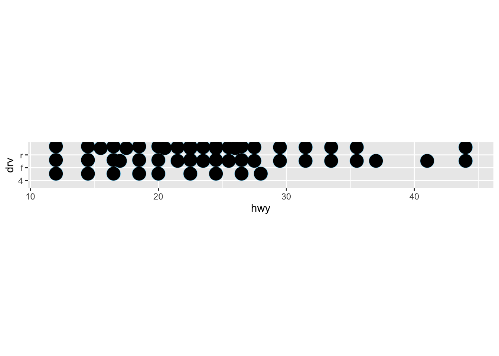
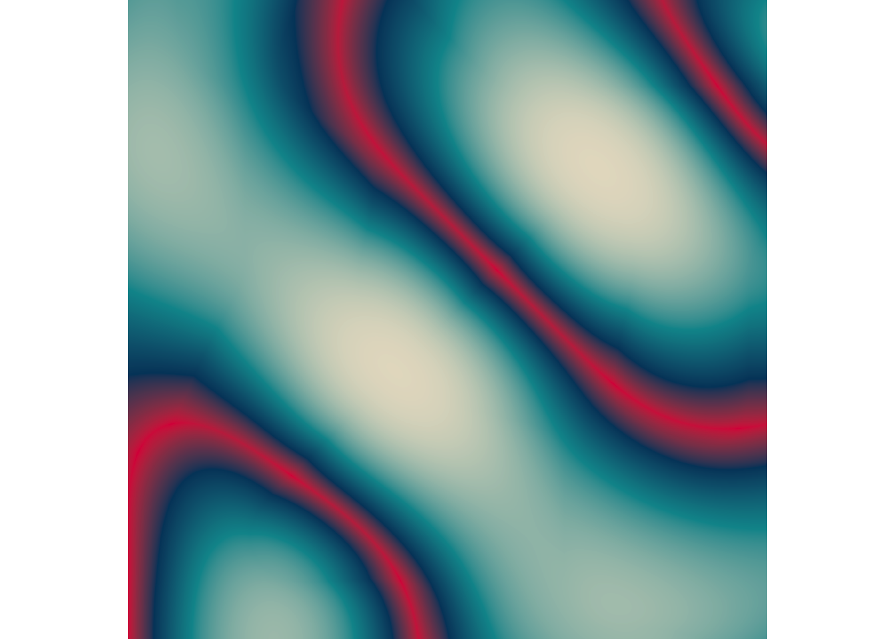

Choose Your Own Assignment - Generative ArtWorkshop (structured only)
Part 2b: Introductory Exercises
Art is Theft Exercise
Try it yourself! Using nothing other than ggplot2 and the mpg data set, create your own artwork. Don’t take too long: 3 minutes at the absolute most! See what you can come up with in that time!
#load in necessary packages library(tidyverse)library(tibble)#load in mpg data and set up ggplotggplot(data = mpg, #set aesthetics and select dataaes(x=hwy, y=drv, colour = drv)) +#select dotplot to show data and set size and color of dotsgeom_dotplot(show.legend =FALSE, size =3, color ="skyblue") +#select another dotplot data and make size smaller and transparentgeom_dotplot(show.legend =FALSE, size =0.5, color ="transparent") +#change orientaion coord_quickmap() +#set color scalescale_color_brewer()

Technique Exercises
In the materials folder there is a file called polar_art.R that contains a copy of the polar_art() function. Open it and use the polar_art() function to generate your own pieces. Try changing the seed, n, and the palette to create a variety of different pieces.
library(ggplot2)library(tibble)polar_art <-function(seed, n, palette) {# set the state of the random number generatorset.seed(seed)# data frame containing random values for # aesthetics we might want to use in the art dat <-tibble(x0 =runif(n),y0 =runif(n),x1 = x0 +runif(n, min =-.2, max = .2),y1 = y0 +runif(n, min =-.2, max = .2),shade =runif(n), size =runif(n) )# plot segments in various colors, using # polar coordinates and a gradient palette dat |>ggplot(aes(x = x0,y = y0,xend = x1,yend = y1,colour = shade,size = size )) +geom_segment(show.legend =FALSE) +coord_polar() +scale_y_continuous(expand =c(0, 0)) +scale_x_continuous(expand =c(0, 0)) +scale_colour_gradientn(colours = palette) +scale_size(range =c(0, 10)) +theme_void()}#polar_art code that I altered, changed seed polar_art(seed =81, #changed number of samplesn =65, #changed the colors of the plot to shades of pinkpalette =c("hotpink", "pink3", "lightpink"))
#second polar_art code that I altered to test out different palettes and seedspolar_art(seed =45, #changed number of samplesn =90, #changed the colors of the plot to shades of pinkpalette =c("blue", "skyblue3", "lightblue"))
Create a new file called polar_art_02.R that contains the polar_art() function. In the new file, try modifying the polar_art() function itself to see if you can create your own new system.
#changing the actual polar_art to polar_art_02 to change this aspect of the original code#change object name to identify between the two polar_art <-function(seed, n, palette) {#set the seed to get random numbers for dataset.seed(seed)#create new dataframe with the random values dat <-tibble(x0 =runif(n), y0 =runif(n), #CHANGED - alter min and max values to be greaterx1 = x0 +runif(n, min =-.10, max = .10),y1 = y0 +runif(n, min =-.10, max = .10), #set shading for future figuresshade =runif(n), #set size of shapes for figuresize =runif(n) ) #identify plot segments and denote them in different colors dat |>#set plot aesthetics and x and y valuesggplot(aes(x = x0,y = y0,xend = x1,yend = y1,#change color and size for figurescolour = shade, size = size)) +#set geom type as segment and make sure legend does not showgeom_segment(show.legend =FALSE) +#CHANGED - change to coord_flip to alter orientation of datacoord_flip() +#set y axis rangescale_y_continuous(expand =c(0, 0)) +#set x axis rangescale_x_continuous(expand =c(0, 0)) +#set color gradient scale using pallette featurescale_colour_gradientn(colours = palette) +#CHANGED - alter size of scale to be largerscale_size(range =c(0, 50)) +#CHANGED - set theme to different theme than theme_voidtheme_minimal()}#NOTE - this code has been changed as per the exercise instructions to alter the palette, seed, and n values#change the seed to get different random datapolar_art(seed =81, #set the sample size to 65n =65, #change the colors of the plot to be shades of pinkpalette =c("hotpink", "pink3", "lightpink"))
Something to think about: Usually in data science we try to avoid naming our files my_file_version_1, my_file_version_2, etc, and instead we place files under version control using git. Yet here I am in an art context, apparently giving the advice to fall back on the old-fashioned system of naming files with version numbers. Why might I be doing that?
#The artist could want to be able to name their files the old-fashioned way in order to keep track of their work and be able to reproduce what they have created and/or add onto their work in the future. Additionally, the files could be named this way in order to represent where they were created from, so the audience knows that the figures are originally from data wrangling in R.
Color Exercises
In the materials folder there is a file called palette-generators.R that contains a copy of the sample_canva() function. Take a look and try calling the function a few times to see what kind of output it produces. You may find it handy to use show_col() to visualise the results.
#load in necessary packagelibrary(ggthemes)library(scales)
Attaching package: 'scales'
The following object is masked from 'package:purrr':
discard
The following object is masked from 'package:readr':
col_factor
library(ggplot2)#the original function from the first sessionsample_canva <-function(seed =NULL) {#setting random number seedsif(!is.null(seed)) set.seed(seed)#setting palettessample(ggthemes::canva_palettes, 2)[[5]]}#the extended function used in later sessionssample_canva2 <-function(seed =NULL, n =10) {#setting random number seedsif(!is.null(seed)) set.seed(seed)#setting canva palettessample(ggthemes::canva_palettes, 10)[[10]] |> (\(x) colorRampPalette(x)(n))() }#show the colors to visualize resultscanva_palettes[[70]]
[1] "#ffccbb" "#6eb5c0" "#006c84" "#e2e8e4"
#printing resultsshow_col(canva_palettes[[70]])
Try writing your own random palette generator. A simple (and occasionally useful) approach is to construct a palette consisting of distinct but otherwise randomly selected named colours in R. There is a set of 502 colour names generated by calling colours() with distinct = TRUE). Write a function called sample_named_colours() that takes n as an input argument, and then returns a sample of n of these colour. Try using it with the polar_art() function.
#load in relevant package just in caselibrary(ggthemes)#write new function similar to sample_canvasample_named_colors <-function(seed =NULL) {#set seed to be random number generationif(!is.null(seed)) set.seed(seed)#set sample of colors to come from set of 502 possible color namessample(colors(distinct =TRUE))}#use new color generator code for existing code we have for polar art and change seed and n valuepolar_art(seed =76, n =75, palette =sample_named_colors(seed =76))
The sample_canva() function, as I’ve written it, preserves the original structure of the 150 palettes in ggthemes::canva_palettes, so that the 4 colours returned all belong to the same palette on the Canva website originally. Try breaking this constraint. If you call unlist(ggthemes::canva_palettes) you get a vector of 600 distinct colours. Write a palette generating function that samples colours randomly from that set of 600 colours.
library(ggthemes)# the original function from the first sessionsample_canva <-function(seed =NULL) {if(!is.null(seed)) set.seed(seed)sample(ggthemes::canva_palettes, 1)[[1]]}# the extended function used in later sessionssample_canva2 <-function(seed =NULL, n =4) {if(!is.null(seed)) set.seed(seed)sample(ggthemes::canva_palettes, 1)[[1]] |> (\(x) colorRampPalette(x)(n))() }#use code for setting up seed for sample_canva function sample_canva <-function(seed =NULL) {if(!is.null(seed)) set.seed(seed)#change from just ggthemes to unlist to get vector of 600 colors to sample fromsample(unlist(ggthemes::canva_palettes), 1)[[1]]}#create polar_art figure using random color from sample_canva with seed set to 659polar_art(seed =659, n =600, palette =sample_canva(seed =659))
Composition Exercises
In the materials folder there is a file called polar-styled-plots.R that contains a copy of the sample_canva(), sample_data() and polar_styled_plot() functions. Without modifying any of these three functions, explore how much flexibility you have to make different pieces in which (1) data are generated with sample_data(), (2) the plot is initialised by calling polar_styled_plot(), and (3) the piece is created by adding ggplot2 geoms. Data manipulation with dplyr is allowed!
#load in necessary packageslibrary(ggplot2)library(tibble)library(dplyr)#not modifiedsample_canva <-function(seed =NULL) {if(!is.null(seed)) set.seed(seed)sample(ggthemes::canva_palettes, 1)[[1]]}#not modifiedsample_data <-function(seed =NULL, n =100){if(!is.null(seed)) set.seed(seed) dat <-tibble(x0 =runif(n),y0 =runif(n),x1 = x0 +runif(n, min =-.2, max = .2),y1 = y0 +runif(n, min =-.2, max = .2),shade =runif(n), size =runif(n),shape =factor(sample(0:22, size = n, replace =TRUE)) )}#not modifiedpolar_styled_plot <-function(data =NULL, palette) {ggplot(data = data,mapping =aes(x = x0,y = y0,xend = x1,yend = y1,colour = shade,size = size )) +coord_polar(clip ="off") +scale_y_continuous(expand =c(0, 0),limits =c(0, 1), oob = scales::oob_keep ) +scale_x_continuous(expand =c(0, 0), limits =c(0, 1), oob = scales::oob_keep ) +scale_colour_gradientn(colours = palette) +scale_size(range =c(0, 10)) +theme_void() +guides(colour =guide_none(),size =guide_none(),fill =guide_none(),shape =guide_none() )}#change the sample data called by changing the number of datapoints and changing the seed numberdat <-sample_data(n =96, seed =45) |>#mutate to change size by dividing by two mutate(y1 = y0, size = size/2)#change seed number (same as new seed number in above line of code) pal <-sample_canva(seed =45)#create new plot of this alternative data polar_styled_plot(data = dat, palette = pal) +#use geom_segment to create image and change size to be smallergeom_segment(size =1) +#create second geom of different lines and make these much largergeom_path(size =5)
In the examples above and the previous exercise you saw that the polar_styled_plot() function plays the role of defining an overarching “style” for possible art pieces, but it doesn’t completely constrain artistic freedom. Your task in this exercise is to try to write a my_styled_plot() that does something similar… but creates a different style that you can explore
#sample palete a random using seed sample_canva <-function(seed =NULL) {#set seed and restrictionsif(!is.null(seed)) set.seed(seed)#select palette to usesample(ggthemes::canva_palettes, 1)[[1]]}#generate random numbers using tibble and set seed and number of samplessample_data <-function(seed =NULL, n =100){#determine seeds settingif(!is.null(seed)) set.seed(seed)#set restrictions for tibble for x and y dat <-tibble(x0 =runif(n),y0 =runif(n),#set min and max x valuesx1 = x0 +runif(n, min =-.2, max = .2),#set min and max y valuesy1 = y0 +runif(n, min =-.2, max = .2),#assign shading and size for samplesshade =runif(n), size =runif(n),#assign shape and size for datashape =factor(sample(0:22, size = n, replace =TRUE)))}#modified version of polar_styled_plots to be my_styled_plotsmy_styled_plot <-function(data =NULL, palette) {ggplot(data = data,mapping =aes(x = x0,y = y0,xend = x1,yend = y1,colour = shade, size = size)) +#CHANGED - switched to coord_fixed and ratio set at 100coord_fixed(ratio =100) +#CHANGED - made limits greater scale_y_continuous(expand =c(0, 0),limits =c(0, 50),oob = scales::oob_keep) +#CHANGED - made limits greaterscale_x_continuous(expand =c(0, 0), limits =c(0, 50),oob = scales::oob_keep) +#set color gradient to palette we chosescale_colour_gradientn(colours = palette) +#CHANGED - change size of scale range to be largerscale_size(range =c(0, 85)) +#CHANGED - altered theme to have more backgroundtheme_light() +#set color guides to noneguides(colour =guide_none(),#set size, fill, and shape arguments for guides functionsize =guide_none(), fill =guide_none(), shape =guide_none())}#changed the sample data called by changing the number of datapoints and changing the seed numberdat <-sample_data(n =96, seed =45) |>#mutate to change size by dividing by two mutate(y1 = y0, size = size/2)#change seed number (same as new seed number in above line of code) pal <-sample_canva(seed =45)#create new plot of this alternative data polar_styled_plot(data = dat, palette = pal) +#CHANGED - enlarge data to make it unrecognizable from beforegeom_segment(size =500) +#create second geom of different lines and make these much largergeom_path(size =5) +#create blue line as curve of datageom_smooth(aes(group =1), method ="loess", se =FALSE)
`geom_smooth()` using formula = 'y ~ x'
Warning: The following aesthetics were dropped during statistical transformation: xend,
yend, colour, and size.
ℹ This can happen when ggplot fails to infer the correct grouping structure in
the data.
ℹ Did you forget to specify a `group` aesthetic or to convert a numerical
variable into a factor?
Part 2c: Art Of Your Choice Exercises: Spatial Noise
Sampling Spatial Patterns Exercise
#load in necessary packageslibrary(dplyr)library(purrr)library(tibble)library(ggplot2)library(ggthemes)library(ambient)
Exercise: Try it yourself! In the materials folder there is a file called first-ambient-art.R that reproduces the code above. Try playing around with it to see what kind of output you can create by changing the values fed to gen_perlin(), or by trying other generator functions!
#simple function to generate random palettessample_canva <-function(seed =NULL) {#set seed to be random generationif(!is.null(seed)) set.seed(seed)#CHANGED - set palette for randomly selected datasample(ggthemes::canva_palettes, 98)[[98]]}#define the spatial grid of x coordinatesx_coords <-seq(from =0, to =1, length.out =600)#define the spatial grid of y coordinatesy_coords <-seq(from =0, to =1, length.out =600)#combination of coordinate data in new dataframecanvas <-long_grid(x = x_coords, y = y_coords) #set spatial frequencyfreq_spatial <-10#set information for spatial seedseed_spatial <-100#set palette for seed seed_palette <-101#create new art project essentially dat <- canvas |>#mutate so that we can add gen_perlin function to new canvasmutate(#CHANGED from gen_perlin to gen_simplex to display different way paint =gen_simplex(#set x and y valuesx = x, y = y, #set figure frequency frequency = freq_spatial, #set seed for figureseed = seed_spatial ) )#show picture and create new figure from information we gatheredpic <- dat |>#use ggplot function and set aesthetics and fill informationggplot(aes(x, y, fill = paint)) +#insert geom_raster to display the datageom_raster(show.legend =FALSE) +#set specific themetheme_void() +#set coord_equal value to nothingcoord_equal() +#set x and y axis scale_x_continuous(expand =c(0, 0)) +scale_y_continuous(expand =c(0, 0)) +#set scale fill gradient to determine colors of plotscale_fill_gradientn(colours =sample_canva(seed_palette) )#print the picture we have created above in pic plot(pic)
Our First System Exercises
Exercises:
In the materials folder there is a file called make-noise-art.R that includes the make_noise_art() function. Unlike the code I’ve shown here, the version in the script writes the output to a file (located at output/noise-art.png). Try playing around with the inputs to make_noise_art() to see what outputs you can create.
#install new package for this sectionlibrary(here)
here() starts at /Users/paigelund/Desktop/es_193DS/art-from-code
#copy from what we have been doing beforesample_canva <-function(seed =NULL) {#set up random seed generationif(!is.null(seed)) set.seed(seed)#set palette themesample(ggthemes::canva_palettes, 1)[[1]]}#set up art and assign colors to usemake_noise_art <-function(#change the gen function usedgenerator = gen_waves, #alter the frequency from what it used to befrequency =80, #change the number for the seedseed =45,#change the number of pixelspixels =500,#select color palette palette =c("blue3", "purple2", "violet", "hotpink"), ...) {#define the grid canvas <-long_grid(#set x and y values and the type of pixelsx =seq(from =0, to =1, length.out = pixels),y =seq(from =0, to =1, length.out = pixels) ) #use the generator to add paint canvas <- canvas |>#use paint within the mutate function and generate frequencymutate(paint =generator( x, y, frequency = frequency, #set seed information for laterseed = seed, ... ) )#use ggplot2 to draw the picture art <- canvas |>ggplot(aes(x, y, fill = paint)) +geom_raster(show.legend =FALSE) +theme_void() +coord_equal() +scale_x_continuous(expand =c(0, 0)) +scale_y_continuous(expand =c(0, 0)) +scale_fill_gradientn(colours = palette)#return figurereturn(art)}# call make_noise_art with idiosyncratic parametersart <-make_noise_art(#CHANGED - alter the gen function that is used generator = gen_worley,#set seed for figureseed =1000, #set color palette for figurepalette =sample_canva(100),#assign value for distancevalue ="distance",#set number of pixelspixels =1000)# save the plot to file with a generic file nameggsave(#name the file and assign where it will gofilename =here("output", "noise-art-2.png"), #define what the ggsave isplot = art,#set width of figurewidth =50,#set height of figureheight =50,#set pixel units of figureunits ="px",dpi =300)#print what I created in the above code and what is in the file noise-art-2.pngplot(art)
At the moment, the script is set up so that the output is always written to the same file, output/noise-art.png. When you create your own generative art systems you will want to ensure that each unique output is written to a file with a unique filename, and that this filename should (ideally!) allow you to work out what inputs were used to create the piece. How would you write code to do this?
#In order to write the code to do this you just need to change the name of the file within the ggsave function under filename... so in the code below I changed the code to be different and commented it out for reference. #ggsave(#name the file and assign where it will go#filename = here("change the output here", "make this any different name.png"), #define what the ggsave is#plot = art,#set width of figure#width = 50,#set height of figure#height = 50,#set pixel units of figure#units = "px",#dpi = 300)
Why dplyr is a Girls Best Friend Exercises
Exercise: Try it yourself! In the materials folder there is a script called dplyr-ambient.R that defines blank_canvas and plot_painted_canvas() for you. At the bottom of the file there is space for you to add to the blank canvas. Try using dplyr and ambient together to create a spatial noise pattern of your own.
sample_canva <-function(seed =NULL) {if(!is.null(seed)) set.seed(seed)sample(ggthemes::canva_palettes, 1)[[1]]}blank_canvas <-long_grid(x =seq(from =0, to =56, length.out =400),y =seq(from =0, to =56, length.out =400)) plot_painted_canvas <-function(canvas, palette =NULL) {if(is.null(palette)) { palette <-c("green","green3","green2","") } canvas |>ggplot(aes(x, y, fill = paint)) +geom_raster(show.legend =FALSE) +theme_void() +coord_equal() +scale_x_continuous(expand =c(0, 0)) +scale_y_continuous(expand =c(0, 0)) +scale_fill_gradientn(colours = palette)}# your code here! add to the blank canvas :)blank_canvas |>mutate(lf_noise =gen_waves(x, y, frequency =4),mf_noise =gen_waves(x, y, frequency =16),hf_noise =gen_waves(x, y, frequency =112),gate =gen_simplex(x, y, frequency =8) |>normalise(),paint = lf_noise + (6+ mf_noise) * (gate >= .5& gate < .01) + (6+ hf_noise) * (gate >= .01) ) |>plot_painted_canvas(palette =sample_canva(seed =498))
Fractals Exercises
The fractal_art.R script in the materials folder contains all the setup you need to play around with the fractal_art() function. Try using it to explore the possibilities! There are a lot of possibilities in fractals. Here are a few ideas to get you started:
Exercises:
The easiest way to play around with fractals is to modify the basic arguments. Try changing the generator, fractal, freq_init (i.e., frequency value for the first octave), octaves, seed, and palette to make a piece you really like.
library(purrr)sample_canva <-function(seed =NULL) {if(!is.null(seed)) set.seed(seed)sample(ggthemes::canva_palettes, 1)[[1]]}blank_canvas <-long_grid(x =seq(from =0, to =1, length.out =2000),y =seq(from =0, to =1, length.out =2000)) plot_painted_canvas <-function(canvas, palette =NULL) {if(is.null(palette)) { palette <-c("#e5ddc8","#01949a","#004369","#db1f48") } canvas |>ggplot(aes(x, y, fill = paint)) +geom_raster(show.legend =FALSE) +theme_void() +coord_equal() +scale_x_continuous(expand =c(0, 0)) +scale_y_continuous(expand =c(0, 0)) +scale_fill_gradientn(colours = palette)}fractal_art <-function(fractal, generator, palette =NULL, ...) { blank_canvas |>mutate(paint =fracture(noise = generator,fractal = fractal,x = x, y = y, ... ) ) |>plot_painted_canvas(palette = palette)}#change it to be something I really like by altering the aspects identified in questionfractal_art(fbm, gen_spheres, seed =78, octaves =90)
A fun inversion: use those same arguments to create something that you find incredibly ugly!
#changing same aspects to make it really uglyfractal_art(fbm, gen_checkerboard, seed =54, octaves =3)

The fractal_art() function is written flexibly enough that you can pass your own gain functions and frequency functions. There’s an example of this above. Try writing your own functions to modify the gain and frequency rules that apply to the fractal.
gf <-function(x) x * .05fractal_art(ridged, gen_simplex, seed =54, octaves =4, gain = gf)
Using the gen_scope() and gen_gate() examples to motivate you, write your own generator function. See what effect that has.
gen_scope <-function(x, y, frequency, ...) { lf <-gen_spheres(x, y, frequency = frequency, ...) mf <-gen_spheres(x, y, frequency = frequency *2, ...) hf <-gen_spheres(x, y, frequency = frequency *4, ...) gate <-gen_spheres(x, y, frequency = frequency *6, ...) gate <-normalise(gate) paint <- lf + (mf +2) * (gate >= .05& gate < .05) + (hf +2) * (gate >= .5)return(paint)}pal <-sample_canva(seed =14)fractal_art(billow, gen_scope, palette = pal, seed =15, octaves =6)
Curl (of a Spatial) Noise (Pattern) Exercises
The curl-art-1.R and curl-art-2.R scripts contain code to generate the “small grid of fractal walks” image and the “genesis-inspired” image. In both cases the ouput is written to a 2000x2000 pixel png file, and the time taken to complete the task printed to the screen.
Exercise:
Run both scripts, and compare the difference in rendering times
library(tictoc)#answer: the first code chunk takes 0.422 sec while the second takes longer at 2.91 sec #curl-art-1.R codecurl_data <-function( data, iterations =50,step_size = .001, ...) { update <-function(current_state, iteration, ...) { curl <-curl_noise(x = current_state$x, y = current_state$y,generator = fracture, ... ) next_state <- current_state |>mutate(x = x + curl$x * step_size,y = y + curl$y * step_size,time = time +1 )return(next_state) } data |>mutate(id =row_number(), time =1) |>accumulate(1:iterations, update, .init = _, ...) |>bind_rows()}curl_art <-function(...) {curl_data(...) |>ggplot(aes(x, y, group = id)) +geom_path() +theme_void() +coord_equal() }smol_grid <-long_grid(x =1:20, y =1:20)pic <- smol_grid |>mutate(x =normalise(x), y =normalise(y)) |>curl_art(noise = gen_simplex, fractal = fbm, octaves =4, freq_init = .5)tic()ggsave(filename =here("output", "curl-art-1.png"), plot = pic,width =2000,height =2000,units ="px",dpi =300,bg ="white")toc()
0.378 sec elapsed
#curl-art-2.R codecurl_data <-function( data, iterations =50,step_size = .001, ...) { update <-function(current_state, iteration, ...) { curl <-curl_noise(x = current_state$x, y = current_state$y,generator = fracture, ... ) next_state <- current_state |>mutate(x = x + curl$x * step_size,y = y + curl$y * step_size,time = time +1 )return(next_state) } data |>mutate(id =row_number(), time =1) |>accumulate(1:iterations, update, .init = _, ...) |>bind_rows()}curl_art <-function(...) {curl_data(...) |>ggplot(aes(x, y, group = id)) +geom_path() +theme_void() +coord_equal() }custom_curl_data <-function(data) {curl_data(data = data,iterations =80, octaves =10,fractal = ridged,noise = gen_cubic,freq_init =1,frequency =~ . *1.2,gain_init =1,gain =~ . * .9,seed =1 )}circle <-function(n =100) {tibble(theta =2* pi * (1:n) / n, x =cos(theta),y =sin(theta) )}dat1 <-circle(5000) |>custom_curl_data()dat2 <-circle(5000) |>mutate(x = x * .99, y = y * .99) |>custom_curl_data()pic <-ggplot(mapping =aes(x, y, group = time)) +geom_polygon(data = dat1, fill ="#ffffff10") +geom_polygon(data = dat2, fill ="#22222205") +theme_void() +coord_equal()tic()ggsave(filename =here("output", "curl-art-2.png"), plot = pic,width =2000,height =2000,units ="px",dpi =300,bg ="white")toc()
2.778 sec elapsed
Modify the “small grid” version so that it produces smoother looking results.
curl_data <-function( data, iterations =50,step_size = .001, ...) { update <-function(current_state, iteration, ...) { curl <-curl_noise(x = current_state$x, y = current_state$y,generator = fracture, ... ) next_state <- current_state |>mutate(x = x + curl$x * step_size,y = y + curl$y * step_size,time = time +1 )return(next_state) } data |>mutate(id =row_number(), time =1) |>accumulate(1:iterations, update, .init = _, ...) |>bind_rows()}curl_art <-function(...) {curl_data(...) |>ggplot(aes(x, y, group = id)) +geom_path() +theme_void() +coord_equal() }smol_grid <-long_grid(x =1:20, y =1:20)pic <- smol_grid |>mutate(x =normalise(x), y =normalise(y)) |>#smooth it by changing this to gen_wavescurl_art(noise = gen_waves, fractal = fbm, octaves =4, freq_init = .5)tic()ggsave(filename =here("output", "curl-art-1.png"), plot = pic,width =2000,height =2000,units ="px",dpi =300,bg ="white")toc()
0.342 sec elapsed
plot(pic)
Explore what you can do with the “genesis style”. It’s a powerful technique that can do a lot more than I’ve done in this code. By now you should have a good sense of what dials you can turn: the fractal, the generator, the parameters, the palette, etc. You can use dplyr to modify the data if you want to. Try to make something you really like!
custom_curl_data <-function(data) {curl_data(data = data,iterations =4, octaves =8,#change the fractal to be fbm not rigidfractal = fbm,noise = gen_cubic,freq_init =5,frequency =~ . *3,gain_init =2,gain =~ . * .5,seed =79 )}dat1 <-circle(5000) |>custom_curl_data()dat2 <-circle(5000) |>mutate(x = x * .99, y = y * .99) |>custom_curl_data()ggplot(mapping =aes(x, y, group = time)) +geom_polygon(data = dat1, fill ="hotpink") +geom_polygon(data = dat2, fill ="#22222210") +theme_void() +coord_equal()
Part 2d: Art Of Your Choice: Iterated Function Systems
Exercise: Code for this system is included in the barnsley-fern.R script.
fern_transform <-function(coord, ind) {# coefficients for the stem function f_1if(ind ==1) { mat <-matrix(c(0, 0, 0, .16), 2, 2) # matrix to multiply off <-c(0, 0) # offset vector to add }# coefficients for the small leaflet function f_2if(ind ==2) { mat <-matrix(c(.85, -.04, .04, .85), 2, 2) off <-c(0, 1.6) }# coefficients for the right-side function f_3if(ind ==3) { mat <-matrix(c(.2, .23, -.26, .22), 2, 2) off <-c(0, 1.6) }# coefficients for the left-side function f_4if(ind ==4) { mat <-matrix(c(-.15, .26, .28, .24), 2, 2) off <-c(0, .44) }# return the affine transformed coords coord <- mat %*% coord + offreturn(coord)}fern_chaos <-function(iterations =10000, seed =NULL) {if(!is.null(seed)) set.seed(seed)# which transformation to apply at each iteration transform_index <-sample(x =1:4, size = iterations, replace=TRUE, prob =c(.01, .85, .07, .07) )# initialise chaos game at the origin start <-matrix(c(0, 0))# helper function to collapse accumulated output bind_to_column_matrix <-function(lst) {do.call(cbind, lst) }# iterate until done! coord_matrix <- transform_index |>accumulate(fern_transform, .init = start) |>bind_to_column_matrix() # tidy the output, add extra columns, and return coord_df <-t(coord_matrix) |>as.data.frame() names(coord_df) <-c("x", "y") coord_df <- coord_df |>as_tibble() |>mutate(transform =c(0, transform_index),iteration =row_number() -1 )return(coord_df)}fern_dat <-fern_chaos(seed =1)pic <-ggplot(fern_dat, aes(x, y, colour = iteration)) +geom_point(size =1, stroke =0) +coord_equal() +theme_void() +guides(colour =guide_legend(title ="transformation", override.aes =list(size =5)) )plot(pic)
Chaos Game for the Barnsley Fern Exercise
Exercise: Code for this system is included in the unbox-base.R script.
sample_canva2 <-function(seed =NULL, n =4) {if(!is.null(seed)) set.seed(seed)sample(ggthemes::canva_palettes, 1)[[1]] |> (\(x) colorRampPalette(x)(n))() }funs <-list(function(point) point + (sum(point ^2)) ^ (1/3),function(point) sin(point),function(point) 2*sin(point))unboxer_base <-function(iterations, layers, seed =NULL) {if(!is.null(seed)) set.seed(seed)# coefficients defining affine layer transforms, A_i coeffs <-array(data =runif(9* layers, min =-1, max =1), dim =c(3, 3, layers) )# list of variant functions, g_j funs <-list(function(point) point + (sum(point ^2)) ^ (1/3),function(point) sin(point),function(point) 2*sin(point) )# updater function: apply the layer, then the function# (the weirdness with point[3] is me treating colour as special) update <-function(point, layer, transform) { f <- funs[[transform]] z <- point[3] point[3] <-1 point <-f(point %*% coeffs[,,layer]) point[3] <- (point[3] + z)/2return(point) }# initial point point0 <-matrix(data =runif(3, min =-1, max =1), nrow =1,ncol =3 )# sample points layer_ind <-sample(layers, iterations, replace =TRUE) trans_ind <-sample(length(funs), iterations, replace =TRUE) points <-accumulate2(layer_ind, trans_ind, update, .init = point0)# tidy up, add columns, and return points <-matrix(unlist(points), ncol =3, byrow =TRUE) points <-cbind( points,c(0, layer_ind),c(0, trans_ind) )return(points)}unbox_art <-function(data, seed =NULL, size =1) {# convert to data frame and sample a palette data <- data |>as.data.frame() |>as_tibble()names(data) <-c("x", "y", "c", "l", "t")[1:ncol(data)] shades <-sample_canva2(seed)# render image as a scatter plotggplot(data, aes(x, y, colour = c)) +geom_point(size = size,stroke =0,show.legend =FALSE ) +theme_void() +coord_equal(xlim =c(-4, 4), ylim =c(-4, 4)) +scale_colour_gradientn(colours = shades) +scale_x_continuous(expand =c(0, 0)) +scale_y_continuous(expand =c(0, 0)) +theme(panel.background =element_rect(fill = shades[1], colour = shades[1] ))}tic()seed <-1234layers <-5pic <-unboxer_base(1000000, layers = layers, seed = seed) |>unbox_art(seed = seed, size = .2) fname <-paste0("unboxer-base-", layers, "-", seed, ".png")ggsave(filename =here("output", fname), plot = pic,width =2000,height =2000,units ="px",dpi =300)toc()
21.746 sec elapsed
plot(pic)
Part 2e: Pull It All Together
Create 3 art pieces that combines elements of what you learned from parts b-d.
Art Piece 1
# Function to generate random palettessample_canva <-function(seed =NULL) {if(!is.null(seed)) set.seed(seed)sample(ggthemes::canva_palettes, 98)[[98]]}# Generate the spatial noise datagenerate_spatial_data <-function(seed_spatial, freq_spatial) { x_coords <-seq(from =0, to =1, length.out =600) y_coords <-seq(from =0, to =1, length.out =600) canvas <-long_grid(x = x_coords, y = y_coords) dat <- canvas |>mutate(paint =gen_simplex(x = x, y = y, frequency = freq_spatial, seed = seed_spatial ) )return(dat)}# Function to create the mtcars figure with integrated spatial data and black bordersmtcars_figure <-function(seed, n, palette, seed_spatial, freq_spatial, fern_points) {# Set the state of the random number generatorset.seed(seed)# Generate the spatial data spatial_data <-generate_spatial_data(seed_spatial, freq_spatial)# Data frame containing random values for aesthetics dat <-tibble(x0 =runif(n),y0 =runif(n),x1 = x0 +runif(n, min =-.2, max = .2),y1 = y0 +runif(n, min =-.2, max = .2),shade =runif(n), size =runif(n),paint =sample(spatial_data$paint, n) )# Plot segments with a black border in various colors using the generated palette plot <- dat |>ggplot(aes(x = x0,y = y0,xend = x1,yend = y1,colour = shade,size = size,fill = paint )) +geom_segment(show.legend =FALSE) +geom_raster(show.legend =FALSE) +coord_equal() +scale_y_continuous(expand =c(0, 0)) +scale_x_continuous(expand =c(0, 0)) +scale_colour_gradientn(colours = palette) +scale_size(range =c(0, 10)) +scale_fill_gradientn(colours =sample_canva(seed_spatial)) +theme_void() # Add the fern points as an additional layer plot <- plot +geom_point(data = fern_points, aes(x = x /10, y = y /10), color ="skyblue4", size =0.2, alpha =0.7, inherit.aes =FALSE)return(plot)}# Function to generate Barnsley fern pointsfern_transform <-function(coord, ind) {if(ind ==1) { mat <-matrix(c(0, 0, 0, .16), 2, 2) off <-c(0, 0) }if(ind ==2) { mat <-matrix(c(.85, -.04, .04, .85), 2, 2) off <-c(0, 1.6) }if(ind ==3) { mat <-matrix(c(.2, .23, -.26, .22), 2, 2) off <-c(0, 1.6) }if(ind ==4) { mat <-matrix(c(-.15, .26, .28, .24), 2, 2) off <-c(0, .44) } coord <- mat %*% coord + offreturn(coord)}fern_chaos <-function(iterations =10000, seed =NULL) {if(!is.null(seed)) set.seed(seed) transform_index <-sample(x =1:4, size = iterations, replace=TRUE, prob =c(.01, .85, .07, .07) ) start <-matrix(c(0, 0)) bind_to_column_matrix <-function(lst) {do.call(cbind, lst) } coord_matrix <- transform_index |>accumulate(fern_transform, .init = start) |>bind_to_column_matrix() coord_df <-t(coord_matrix) |>as.data.frame() names(coord_df) <-c("x", "y") coord_df <- coord_df |>as_tibble() |>mutate(transform =c(0, transform_index),iteration =row_number() -1 )return(coord_df)}# Generate a small number of fern pointsfern_points <-fern_chaos(iterations =500, seed =1)# Set parametersseed <-45n <-40palette <-c("grey90", "cadetblue4", "lightblue", "lightblue3", "grey95", "skyblue4")seed_spatial <-100freq_spatial <-10# Create the mtcars figuremtcars_seed <-mtcars_figure(seed = seed, n = n, palette = palette, seed_spatial = seed_spatial, freq_spatial = freq_spatial, fern_points = fern_points)# Plot the mtcars figureplot(mtcars_seed)
Warning: Raster pixels are placed at uneven horizontal intervals and will be shifted
ℹ Consider using `geom_tile()` instead.
Raster pixels are placed at uneven horizontal intervals and will be shifted
ℹ Consider using `geom_tile()` instead.
Figure 1 Caption:
Figure 1 Title: A fern admist chaos. Figure created: 06-4-24. Inspiration: I was inspired to create this piece because I was really drawn to both the geometric shapes within the introductory lesson as well as the concept of being able to create artwork resembling nature within a technology like R Studio. I thought it would be fun to combine the two ideas of something that looks more technical with something that resembles nature to have an artistic juxtaposition. Specific Components: I utilized the random palette generator from the introductory exercises (part b) to get randomized data for the art piece as well as using the tibble function to create a new dataframe for these random values and set aesthetics. From part c which focused on spatial noise I used the method of generating spatial noise data, setting frequencies and seeds. Finally, from part d which focused on iterated function systems I included a smaller blue figure of a fern on top of the existing artpiece to create dimension through the Barnsley fern points method, setting up matrices and generating iterations.